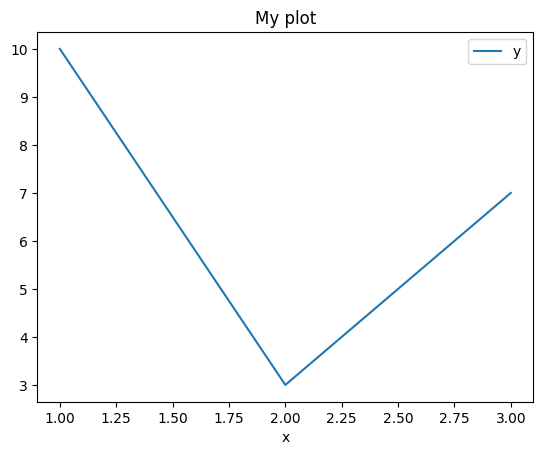

8. Example publishing from Jupyter notebook#
As well as authoring content in MyST markdown files, we can also author content in Jupyter notebooks.
As might be expected, notebook markdown cells support the full range of simple markdown syntax elements such as emphasised and bold font content, as well as lists:
item 1
item 2
and quotes:
My quotation
But we can also use notebooks to generate output content from code.
For example, we can create a simple data table:
import pandas as pd
df = pd.DataFrame({"x": [1, 2, 3], "y":[10,3, 7]})
df
| x | y | |
|---|---|---|
| 0 | 1 | 10 |
| 1 | 2 | 3 |
| 2 | 3 | 7 |
And then generate a simple plot from the data:
df.plot(x="x", y="y").set_title("My plot");

An output chart image is created directly from the data in the dataframe.
The image is saved to an image file and then embedded back into the generated HTML in the Jupyter Book HTML publishing processing, but currently the XML generation process does not generate the image file or reference it via a tag in the XML.
Related discussion: https://github.com/orgs/executablebooks/discussions/1096